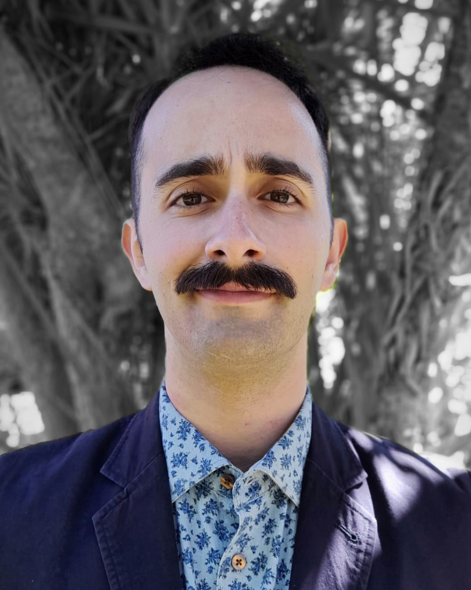

Welcome!
I'm Nicolás Varela García, PhD (Permanently halfway Done) candidate in Economic History at Universidad Carlos III de Madrid and Adjunct Professor at IE University. After 6 fantastic years at Madrid, Paris welcomed me like a son while visiting the Paris School of Economics - École d'économie de Paris.
My research focuses on the political economy of Spanish monetary policy during the Francoist dictatorship, specifically on... :
- The interplay and power distribution among different de iure and de facto policymakers in the lead-up to the nationalization of the Bank of Spain.
- The structure of the interbank money market and the its reaction to the the different monetary policy shocks surrounding the different reforms of the mid-regime turning point.
- The attitude of the different bodies of monetary policymaking during the period of development of a modern monetary policy in Spain.